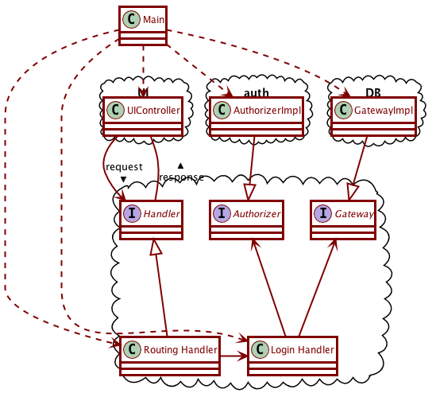

Activity 11-1 Integration and Acceptance Tests
Integration tests and acceptance tests are closely related.
- Integration Tests test how the different components of the program work together. They are in essence end-to-end tests, that test the application in conditions extremely similar to its deployment, only abstracting away the UI and possibly the database.
- Acceptance Tests are tests which, when they pass, confirm that the required feature is fully implemented. They are in effect your “contract” with the client. They are invariably integration tests themselves, but they have this more specific goal, and they are typically written in a language that the client can understand.
We will mostly concern ourselves with integration tests for now.
Integration Tests for a login interactor
For an integration test we must also consider the overall structure of our system. Let’s start by considering the external components of our application, which we want to separate behind boundaries:
- There is some web server or something similar as a delivery mechanism, which needs to forward requests to our application and receive responses in return. We are going to need two data-structures (data-transfer-objects) Request and Response to represent those.
- We will also need some kind of Handler interface, which the delivery mechanism interacts with. It would need to have at least a method with signature
Response handle(Request req) to handle the requests coming from the delivery mechanism. It would probably also be nice for it to have a boolean canHandle(Request req) mechanism to determine if it can handle a certain request.
- We will probably have many different handlers for different kinds of requests, and there is probably a main RoutingHandler which is the one visible to the delivery mechanism, and simply redirects traffic to the appropriate specific handler (like a login interactor).
- We will need some Main class to prepare this routing handler with all the other handlers that it can route requests to. We often call this the Context, but we’ll just call it Main for now.
- There is likely some authorizing and authenticating service, represented by some Authorizer class, which also needs to be a plugin to our main application. We’ll need to be setting it up in the Main context.
- We’ll need to have some Gateway interface which forms our connection to a storage mechanism like a database. Again Main will be responsible for setting that up.
